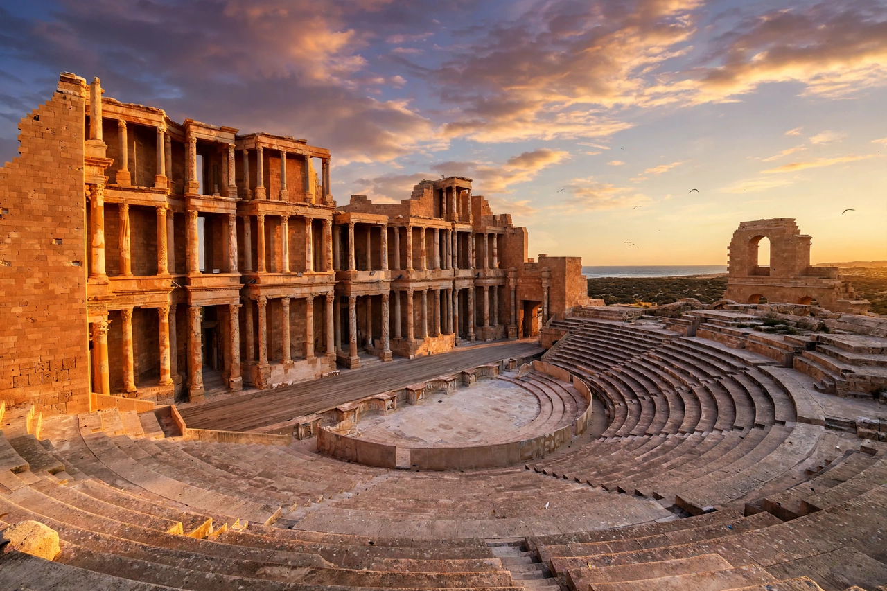

| Region | Northwestern Libya |
|---|---|
| Principal city | Tripoli |
| Name origin | Greek/Latin: "three cities" — Oea, Sabratha, Leptis Magna |
| Historical periods | Phoenician, Roman, Vandal, Byzantine, Arab, Ottoman, Italian colonial, Libyan |

Tripolitania (Latin: Regio Tripolitana) is a historic region of western Libya, centred on the coastal cities of Tripoli, Sabratha and Leptis Magna — the "three cities" from which the region takes its name. Together with Cyrenaica in the east and Fezzan in the south, it forms one of the three traditional provinces of modern Libya.
The coast was settled by Phoenicians, whose trading posts grew into the cities of Oea (Tripoli), Sabratha and Leptis Magna. The region passed to Carthage, then to Numidia, and after the Roman conquest was organised as part of the province of Africa. Under Rome, and especially under the emperor Septimius Severus — himself a native of Leptis Magna — the cities became wealthy on trade in grain, olive oil and trans-Saharan goods including gold, ivory and wild animals for the games. Tripolitania was defended by a frontier system, the Limes Tripolitanus, of forts and fortified farms against desert raiders.
The Vandals overran the region in the fifth century AD; Byzantine forces under Belisarius retook it in 533. Arab armies conquered Tripolitania in the seventh century, beginning its Islamisation and Arabicisation. From 1551 until 1911 it was an Ottoman possession, ruled for much of that time by the semi-autonomous Karamanli dynasty. Italy seized the coast during the Italo-Turkish War of 1911–12 and made Tripolitania a colony, later merging it into Italian Libya. In 1951 Tripolitania joined Cyrenaica and Fezzan in the independent Kingdom of Libya; the federal structure was abolished in 1963.
The region covers Libya's northwestern Mediterranean coast, backed by the Jabal Nafusah mountains and the Sahara beyond. Tripoli, the national capital and largest city, lies within it, and the region remains Libya's most populous.